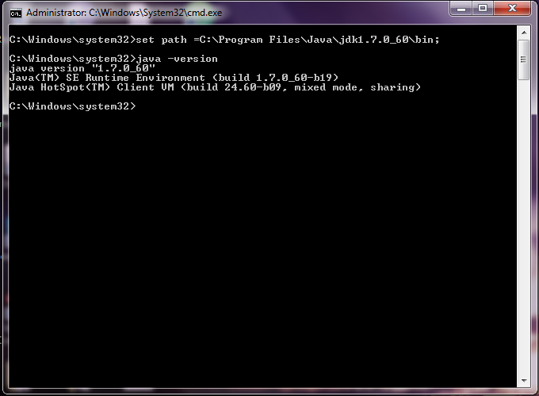
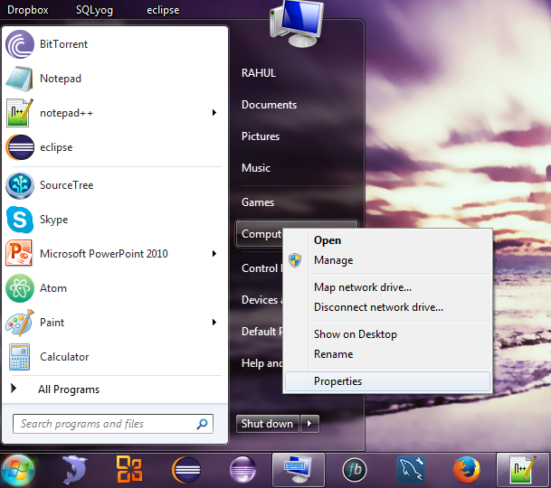
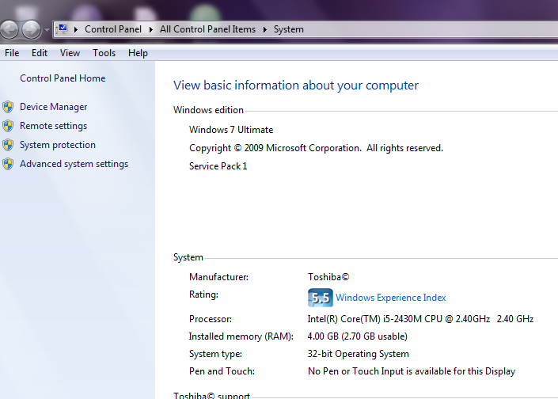
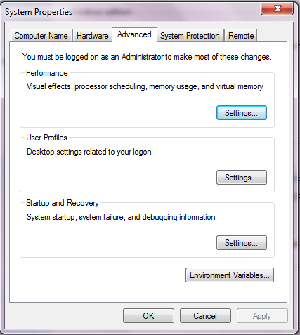
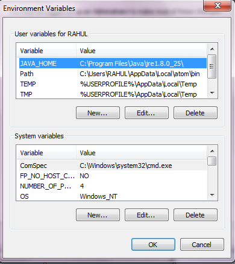
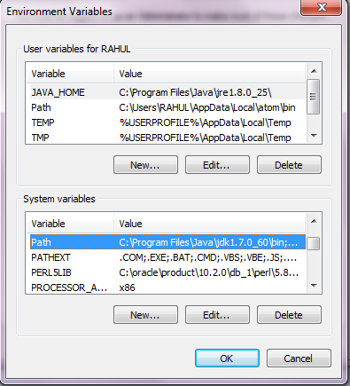
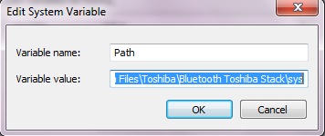
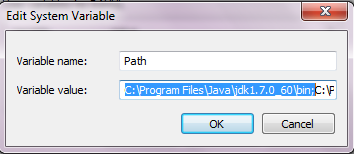

Once you had installed the JDK on the local system, it;s time to set up the path of it to compile and execute the Java Program,
If we are saving the Java Source Code in the jdk/bin directory then it is not required to set up the path because all the tool will be available in the current directory.
However in most of the case we will not be saving the Java Source Code in the jdk/bin directory. So it is necessary to set path of the JDK. The PATH is the system variable that the operating system uses to locate needed executables from the command line or Terminal Window.
There are two ways to set up the Java Path
1). Temporary
2). Permanent
Setting up Temporary Path of JDK in WIndows
1). Open the command prompt
2). copy the path of jdk/bin directory
3). Write in command prompt; set path = copied_path
The figure below shows how to set the Java Path
Initially we set up the Java Path then we check whether the Java Path is been set correctly or not using java-version command line command
Setting up Java Path Permanently
In order to set the Java Path Permanently we need to follow the following step
1).Right Click on the My Computer and click Properties
2)."View Basis Information about computer" pop up
3). Click on the "Advanced System Setting" on the left hand side
4). System properties pop up opens up
5). Click on the Environment Variables button
6). Environment Variables sections opens up. Under System Variable search for the variable name path.
7). Double Click on it and it click open "Edit System Variable"
8). Add the C:\Program Files\Java\jdk1.6.0_23\bin; in Variable Value(Make Sure ; is been added)
9). Click "OK"->"OK"->"OK" to close all the open section
10). The environment path is now set permanently
Setting JAVA Path in Linux OS
Setting up the JAVA PATH is linux is same as setting the PATH in the WIndows OS. But here we use export tool rather than set. The export command is been shown below:
 Ready to Help At:
(+91) 9035211426
Ready to Help At:
(+91) 9035211426